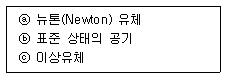
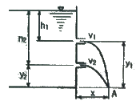
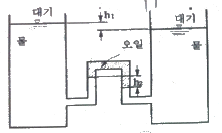
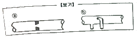

소방설비산업기사(기계) (2014-05-25 기출문제)
1과목: 소방원론
1. 다음 중 자연발화의 위험이 가장 높은 것은?
- 과염소산나트륨
- 셀룰로이드
- 질산나트륨
- 아닐린
(정답률: 78%)

2. 공기 중에 산소는 약 몇 vol% 포함되어 있는가?
- 15
- 18
- 21
- 25
(정답률: 83%)
3. CO2 소화기가 갖는 주된 소화 효과는?
- 냉각소화
- 질식소화
- 연료제거소화
- 연쇄반응차단소화
(정답률: 85%)
4. 목조건물의 화재성상은 내화건물에 비하여 어떠한가?
- 고온 장기형이다.
- 고온 단기형이다.
- 저온 장기형이다.
- 저온 단기형이다.
(정답률: 81%)
5. 다음 중 독성이 가장 강한 가스는?
- C3H8
- O2
- CO2
- COCl2
(정답률: 77%)
6. 할론 1301 소화약제의 주된 소화효과는?
- 기화에 의한 냉각소화 효과
- 중화에 의한 희석소화 효과
- 압력에 의한 제거소화 효과
- 부촉매에 의한 억제소화 효과
(정답률: 79%)
7. 열전달의 스테판-볼츠만의 법칙은 복사체에서 발산되는 복사열은 복사체의 절대온도의 몇 승에 비례한다는 것인가?
- 1/2
- 2
- 3
- 4
(정답률: 79%)
8. 다음 중 물과 반응하여 수소가 발생하지 않는 것은?
- Na
- K
- S
- Li
(정답률: 73%)
9. 다음 중 불완전 연소시 발생하는 가스로서 헤모글로빈에 의한 산소의 공급에 장해를 주는 것은?
- CO
- CO2
- HCN
- HCl
(정답률: 80%)
10. 분말소화약제 중 A, B, C급의 화재에 모두 사용할 수 있는 것은?
- 제1종 분말소화약제
- 제2종 분말소화약제
- 제3종 분말소화약제
- 제4종 분말소화약제
(정답률: 84%)
11. 물이 소화약제로 사용되는 장점으로 가장 거리가 먼 것은?
- 기화잠열이 비교적 크다.
- 가격이 저렴하다.
- 많은 양을 구할 수 있다.
- 모든 종류의 화재에 사용할 수 있다.
(정답률: 79%)
12. 소화약제로서 이산화탄소의 특징이 아닌 것은?
- 전기 전도성이 있어 위험하다.
- 장시간 저장이 가능하다.
- 소화약제에 의한 오손이 없다.
- 무색이고 무취이다.
(정답률: 73%)
13. 다음 중 일반적으로 목조건축물의 화재 시 발화에서 최성기까지의 소요시간에 가장 가까운 것은? (단, 풍속이 거의 없을 경우를 가정한다.)
- 1분미만
- 4 ~ 14분
- 30 ~ 60분
- 90분이상
(정답률: 78%)
14. 화재의 분류에서 A급 화재에 속하는 것은?
- 유류
- 목재
- 전기
- 가스
(정답률: 86%)
15. 20℃의 물 1g을 100℃의 수증기로 변화시키는데 필요한 열량은 얼마인가?
- 699cal
- 619cal
- 539cal
- 80cal
(정답률: 68%)
16. 위험물질의 자연발화를 방지하는 방법이 아닌 것은?
- 열의 축적을 방지할 것
- 저장실의 온도를 저온으로 유지할 것
- 촉매 역할을 하는 물질과 접촉을 피할 것
- 습도를 높일 것
(정답률: 78%)
17. 화재 종류별 표시색상이 옳게 연결된 것은?
- 일반화재 - 청색
- 유류화재 - 황색
- 전기화재 - 백색
- 금속화재 - 적색
(정답률: 81%)
18. 단일원소로 구성된 위험물이 아닌 것은?
- 유황
- 적린
- 에탄올
- 나트륨
(정답률: 71%)
19. 휘발유의 인화점은 약 몇 ℃ 정도 되는가?
- -43 ~ -20℃
- 30 ~ 50℃
- 50 ~ 70℃
- 80 ~ 100℃
(정답률: 66%)
20. 다음 중 제3류 위험물인 나트륨 화재 시의 소화방법으로 가장 적합한 것은?
- 이산화탄소 소화약제를 분사한다.
- 건조사를 뿌린다.
- 할론 1301를 분사한다.
- 물을 뿌린다.
(정답률: 74%)
2과목: 소방유체역학
21. 동력이 2kW인 펌프를 사용하여 수면의 높이 차이가 40m 인 곳으로 물을 끌어 올리려고 한다. 관로 전체의 손실수두가 10m 라고 할 때 펌프의 유량은 약 몇 m3/s 인가? (단, 펌프의 효율은 90%이다.)
- 0.00294
- 0.00367
- 0.00408
- 0.00453
(정답률: 63%)
22. 수평 원형관의 상류측 단면의 안지름이 300mm, 하류측 단면의 안지름이 600mm인 점차확대관이 있다. 상류측 물의 유속이 2m/s 일 때 하류측 단면에서의 물의 유속은 몇 m/s 인가?
- 0.45
- 0.5
- 0.55
- 0.6
(정답률: 56%)
23. 토출량 1.6m3/min, 전양정이 100m인 펌프의 회전차 회전수를 1000rpm에서 1400rpm으로 증가시키면 동력(kW)과 전양정(m)은 각각 얼마로 늘어나는가? (단, 펌프의 효율은 65%이고, 여유율은 10%이다.)
- 44.1 kW, 110m
- 82.1 kW, 120m
- 121.1 kW, 196m
- 142.5 kW, 210m
(정답률: 52%)
24. 열역학 법칙 중 제2종 영구기관의 제작이 불가능함을 역설한 내용은?
- 열역학 제0법칙
- 열역학 제1법칙
- 열역학 제2법칙
- 열역학 제3법칙
(정답률: 71%)
25. 단면적이 0.15m2인 관내에 유량 0.9m3/s의 물이 흐르고 있다. 관 단면적이 0.1m2로 축소되는 부분에서 손실계수가 0.83이라고 한다. 이 축소관에서의 손실수두는 몇 m 인가?
- 1.52
- 2.38
- 3.43
- 14.94
(정답률: 45%)
26. 지름 6cm인 원 관으로부터 매분 4000L의 물이 고정된 평면판에 직각으로 부딪칠 때 평면에 작용하는 충격력은 약 몇 N 인가?
- 1380
- 1570
- 1700
- 1930
(정답률: 56%)
27. 분자량이 35인 어떤 가스의 정압비열이 0.535kJ/kgㆍK라고 가정할 때 이 가스의 비열비(k)는 약 얼마인가? (단, 기체상수 R=8.31434kJ/kmolㆍK이다.)
- 1.4
- 1.5
- 1.65
- 1.8
(정답률: 32%)
28. 단단한 탱크 속에 300kPa, 0℃의 이상기체가 들어있다. 이것을 100℃까지 가열하였을 때 압력 상승은 약 몇 kPa 인가?
- 110
- 210
- 410
- 710
(정답률: 39%)
29. 비중이 0.88인 벤젠에 내결 1mm의 유리관을 세웠더니 벤젠이 유리관을 따라 9.8mm를 올라갔다. 유리와의 접촉각이 0°라 하면 벤젠의 표면장려은 몇 N/a인가?
- 0.021
- 0.042
- 0.084
- 0.128
(정답률: 49%)
30. (보기) 중 비점성 유체(invisxid fluid)를 모두 고른 것은?

- ⓑ
- ⓒ
- ⓐ, ⓑ
- ⓐ, ⓒ
(정답률: 63%)
31. 물과 글리세린과 공기의 점성계수를 크기순으로 바르게 배열한 것은?
- 공기>물>글리세린
- 글리세린>공기>물
- 물>글리세린>공기
- 글리세린>물>공기
(정답률: 70%)
32. 그림과 같이 수조에 붙어 있는 상하 두 노즐에서 물이 분출하여 한 점(A)에서 만나려고 하면 어떤 관계의 식이 성립되어야 하는가? (단, 공기저항과 노즐의 손실은 무시한다.)

- h1y1=h2y2
- h1y2=h2y1
- h1h2=y1y2
- h1y1=2h2y2
(정답률: 52%)
33. 공동현상(cavitation)의 방지법으로 적절하지 않은 것은?
- 배관을 완만하고 짧게 한다.
- 규정 이상으로 회전수를 올리지 않는다.
- 펌프의 설치 위치를 가능한 한 높여서 흡입양정을 높인다.
- 마찰저항이 작은 흡입관을 사용하여 흡입관의 손실을 줄인다.
(정답률: 71%)
34. 30×50cm의 평판이 수면에서 깊이 30cm 되는 곳에 수평으로 놓여 있을 때 평판에 작용하는 물에 의한 힘은 몇 N 인가?
- 341
- 441
- 541
- 641
(정답률: 61%)
35. 온도가 55℃인 평판 위를 흐르는 온도 15℃의 유체가 있다. 평판과 유체 사이의 대류열전달계수(convection heat transfer coefficient)가 70W/(m2ㆍK)일 때 평판 으로부터 유체로 전달되는 대류 열유속(heat flux)은 몇 W/m2인가?
- 2140
- 2450
- 2800
- 2950
(정답률: 40%)
36. U자관 액주계가 2개의 큰 저수조 사이의 입력차를 측정하기 위하여 그림과 같이 설치되어 있다. 오일 레벨의 차이가 수면 레벨 차이의 10배가 되도록 하는 오일의 비중은? (h2=10h1)

- 0.1
- 0.5
- 0.9
- 1.5
(정답률: 39%)
37. 부력의 작용점에 관한 설명으로 옳은 것은?
- 떠 있는물체의 중심
- 물체의 수직 투영면 중심
- 잠겨진 물체의 중력 중심
- 잠겨진 물체 체적의 중심
(정답률: 56%)
38. 일정한 유량의 물이 층류로 원관 속을 흐른다고 가정할 때 원관이 지름을 2배로 하면 손실수두는 몇 배가 되는가?
- 1/2
- 1/4
- 1/8
- 1/16
(정답률: 37%)
39. (보기) 에서 제시한 실험관 ⓐ, ⓑ의 명칭을 바르게 나열한 것은?

- ⓐ 오리피스, ⓑ 피토관
- ⓐ 관노즐, ⓑ 벤튜리관
- ⓐ 위어, ⓑ 벤튜리관
- ⓐ벤튜리관, ⓑ 오리피스
(정답률: 69%)
40. 원관 내부로 유체가 흐를 때 레이놀즈수가 1000이라면 관에 대한 마찰계수(f)는 얼마인가?
- 0.032
- 0.064
- 0.084
- 0.086
(정답률: 70%)
3과목: 소방관계법규
41. 하자보수를 하여야 하는 소방시설 중 하자보수 보증기간이 3년이 아닌 것은?
- 자동식소화기
- 비상방송설비
- 상수도소화용수설비
- 스프링클러설비
(정답률: 75%)
42. 소반관계법의 정의에서 곧바로 지상으로 갈 수 있는 출입구가 있는 층을 무엇이라 하는가?
- 지상층
- 피난층
- 피난경유층
- 피난지역
(정답률: 71%)
43. 제6류 위험물에 대한 소화설비 중 적응성이 없는 것은?
- 옥내소화전설비
- 스프링클러설비
- 포소화설비
- 할로겐화합물소화설비
(정답률: 56%)
44. 한국소방안전협회의 업무가 아닌 것은?
- 위험물탱크 성능시험
- 화재예방과 안전관리의식 고취를 위한 대국민 홍보
- 소방기술과 안전관리에 관한 각종 간행물의 발간
- 소방기술과 안전관리에 관한 교육 및 조사ㆍ연구
(정답률: 77%)
45. 정당한 사유 없이 피난시설, 방화구획 및 방화시설의 유지 관리에 필요한 조치 명령을 위반한 경우 이에 대한 벌칙으로 옳은 것은?(관련 규정 개정전 문제로 여기서는 기존 정답인 4번을 누르면 정답 처리됩니다. 자세한 내용은 해설을 참고하세요.)
- 200만원 이하의 벌금
- 300만원 이하의 벌금
- 1년 이하의 징역 또는 1000만원 이하의 벌금
- 3년 이하의 징역 또는 1500만원 이하의 벌금
(정답률: 58%)
46. 도시의 건물 밀집지역 등 화재가 발생할 우려가 높거나 화재가 발생하는 경우 그로 인하여 피해가 클 것으로 예상되는 일정한 구역으로서 대통령령으로 정하는 지역을 화재경계지구로 지정할 수 있는데, 화재경계지구의 지정권자는?
- 국무총리
- 안전행정부장관
- 시ㆍ도지사
- 소방방재청장
(정답률: 77%)
47. 관할구역에 있는 소방대상물, 관계 지역 또는 관계인에 대하여 소방시설 등이 소방 관계 법령에 적합하게 설치ㆍ유지ㆍ관리되고 있는지, 소방대상물에 화재, 재난, 재해등의 발생 위험이 있는지 등을 확인하기 위하여 관계 공무원으로 하여금 소방안전관리에 관한 특별조사를 하게 할 수 있다. 소방특별조사를 실시하는 사람은?
- 소방안전협회장
- 시ㆍ도지사
- 시장ㆍ군수
- 소방본부장 또는 소방서장
(정답률: 71%)
48. 소방용수시설의 설치기준에서 상업지역 및 공업지역에 설치하는 경우 수평거리 몇 m 이하가 되도록 하여야 하는가?
- 300 m 이하
- 200 m 이하
- 140 m 이하
- 100 m 이하
(정답률: 51%)
49. 건축허가 등의 동의를 요구하는 때에 동의요구서와 함께 첨부하여야 하는 서류가 아닌 것은?
- 건축허가신청서 및 건축허가서
- 소방시설의 층별 평면도 및 층별 계통도
- 소방시설설계업 등록증
- 소방시설공사업 등록증
(정답률: 52%)
50. 소방시설업자가 등록사항의 변경이 있는 때에 변경 신고를 하지 않아도 되는 것은?
- 기술인력을 변경하는 경우
- 영업소의 소재지를 변경하는 경우
- 사무실 임대차계약을 변경하는 경우
- 명칭 또는 상호를 변경하는 경우
(정답률: 65%)
51. 특정소방대상물에 소방안전관리자를 선임하지 아니한자에 대한 벌칙으로 옳은 것은?
- 300만원 이하의 벌금
- 500만원 이하의 벌금
- 300만원 이하의 과태료
- 500만원 이하의 과태료
(정답률: 69%)
52. 소방시설관리사 시험의 심사위원 및 시험위원이 될 수 없는 사람은?
- 소방 관련 분야의 석사학위를 가진 사람
- 소방기술사
- 소방시설관리사
- 지방소방위 이상의 소방공무원
(정답률: 65%)
53. 관계인이 예방규정을 정하여야 하는 제조소 등의 기준으로 옳은 것은?
- 지정수량의 10배 이상의 위험물을 취급하는 제조소
- 지정수량의 50배 이상의 위험물을 저장하는 옥외저장소
- 지정수량의 100배 이상의 위험물을 저장하는 옥내저장소
- 지정수량의 150배 이상의 위험물을 저장하는 옥외탱크 저장소
(정답률: 65%)
54. 스프링클러설비 또는 물분무소화설비가 설치된 연면적 5000m2 이상인 특정소방대상물(위험물제조소 등은 제외한다)에 대한 종합정밀점검을 할 수 있는 자격자로서 옳지 않은 것은?
- 소방시설관리업자(소방시설관리사가 참여한 경우)
- 소방안전관리자로 선임된 소방기술사
- 소방안전관리자로 선임된 소방시설관리사
- 기계ㆍ전기분야를 함께 취득한 소방설비기사
(정답률: 62%)
55. 제조소 등이 아닌 장소에서 지정수량 이상의 위험물을 취급할 수 있는데, 시ㆍ도의 조례가 정하는 바에 따라 관할 소방서장의 승인을 받아 지정수량 이상의 위험물을 며칠 이내의 기간 동안 임시로 저장 또는 취급할 수 있는가?
- 100일 이상
- 60일 이상
- 90일 이내
- 120일 이내
(정답률: 77%)
56. 소방특별조사 결과에 따른 조치명령으로 인하여 손실을 입은 자에 대한 손실보상에 관한 설명이다. 틀린 것은?
- 손실보상에 관하여는 시ㆍ도지사와 손실을 입은 자가 협의 하여야 한다.
- 보상금액에 관한 협의가 성립되지 아니한 경우에는 시ㆍ도지사는 그 보상금액을 지급하거나 공탁하고 이를 상대방에게 알려야 한다.
- 시ㆍ도지사가 손실을 보상하는 경우에는 공시지가로 보상하여야 한다.
- 보상금의 지급 또는 공탁의 통지에 불복이 있는 자는 지급 또는 공탁의 통지를 받은 날부터 30일 이내에 관할토지수용위원회에 재결을 신청할 수 있다.
(정답률: 71%)
57. 제2류 위험물에 속하는 것은?
- 질산염류
- 황화린
- 칼륨
- 알킬알루미늄
(정답률: 65%)
58. 시ㆍ도지사가 이웃하는 다른 시ㆍ도지사와 소방업무에 관하여 상호응원협정을 체결하고자 하는 때에 포함되어야 하는 사항으로 틀린 것은?
- 화재의 경계ㆍ진압활동에 관한 사항
- 응원출동대상지역 및 규모에 관한 사항
- 출동대원의 수당ㆍ식사 등의 소요경비 부담에 관한 사항
- 지휘권의 범위에 관한 사항
(정답률: 68%)
59. 소방시설의 종류 중 경보설비가 아닌 것은?
- 비상방송설비
- 누전경보기
- 연결살수설비
- 자동화재속보설비
(정답률: 76%)
60. 방염성능기준 이상의 실내장식물 등을 설치하여야 하는 특정소방대상물에 속하지 않는 것은?
- 숙박시설
- 노유자시설
- 11층 이상인 아파트
- 종합병원
(정답률: 76%)
4과목: 소방기계시설의 구조 및 원리
61. 어느 층에 있어서도 당해 층의 옥내소화전설비(설치개수가 5개 이상은 5개)를 동시에 사용할 경우 노즐선단의 방수 압력은 얼마 이상이어야 하는가?
- 0.1 MPa
- 0.17 MPa
- 0.25 MPa
- 0.35 MPa
(정답률: 60%)
62. 다음 중 일제개방형 스프링클러 소화설비에 대하여 적합하게 설명된 것은?
- 부착장소의 온도 제한이 필요하다.
- 헤드의 휴즈블링크에 의해서 작동된다.
- 일정한 규정에 의하여 설치된 헤드에서 동시에 방수하는 형식이다.
- 헤드의 입구가지 물이 충진되어 있다.
(정답률: 69%)
63. 소화기의 설치수량산정에 대한 설명 중 틀린 것은?
- 소화기의 설치기준은 소화기의 수량으로 정하는 것이 아니라 용도별, 면적별로 소요단위수로 산정한다.
- 소형소화기의 경우 보행거리 30m 마다 설치하는 기준으로 적용한다.
- 11층 이상의 고층부분에서는 소화기 감소조항이 적용 되지 않는다.
- 감소조항을 적용 받아도 보행거리 조항은 준수해야 한다.
(정답률: 69%)
64. 완강기의 구성요소를 크게 3가지로 분류할 수 있다. 다음 중 완강기의 구성요소가 아닌 것은?
- 속도 조절기
- 로프
- 벨트 및 후크
- 보호망
(정답률: 75%)
65. 다음 중 이산화탄소 소화설비 제어반과 관련된 기능이 아닌 것은?
- 음향 경보의 발령
- 소화약제의 방출
- 펌프의 작동
- 소화약제의 방출 지연
(정답률: 53%)
66. 분말 소화설비의 소화약제 중 차고 또는 주차장에 설치할 수 있는 것은 제 몇 종 분말소화약제인가?
- 1
- 2
- 3
- 4
(정답률: 78%)
67. 구조대의 선정조건 중 적합하지 않은 것은?
- 안전하고 쉽게 사용할 수 있는 제품
- 연속으로 활강할 수 있는 제품
- 설치하는 장소에 맞는 면밀한 설계에 의해 사용상 결함이 없는 경량으로 만든 제품
- 강도, 기능보다 설치시간이 가장 짧은 제품
(정답률: 75%)
68. 스프링클러설비의 구성에서 옥내소화전설비와 같은 것은?
- 방수방법
- 가압송수방법
- 감지기를 이용한 작동
- 일제개방밸브 사용
(정답률: 66%)
69. 스프링클러 헤드(폐쇄형)를 보일러실에 설치하고자 할 경우 헤드의 표시온도로서 옳은 것은?
- 보일러실의 평균 온도보다 높은 것을 선택한다.
- 보일러실의 최고 온도보다 낮은 것을 선택한다.
- 보일러실의 최고 온도보다 높은 것을 선택한다.
- 보일러실의 평균 온도의 것을 선택한다.
(정답률: 65%)
70. 물분무소화설비 수원의 저수량 기준에 적합하지 않은 것은?
- 콘베이어벨트 등에 있어서는 벨트부분의 바닥면적 1m2에 대하여 10L/min로 20분간 방수할 수 있는 양 이상으로 할 것
- 특수가연물을 저장 또는 취급하는 소방대상물 또는 그 부분에 있어서 그 바닥면적(최대방수구역의 바닥면적을 기준으로 하며, 50m2이하인 경우에는 50m2) 1m2에 다하여 10L/min로 20분간 방수할 수 있는 양 이상으로 할 것
- 차고에 있어서는 그 바닥면적(최대방수구역의 바닥면적을 기준으로 하며, 50m2 이하인 경우에는 50m2) 1m2에 대하여 20L/min로 20방수할 수 있는 양 이상으로 할 것
- 주차장에 있어서는 그 바닥면적(50m2를 초과할 경우에는 50m2) 1m2에 대하여 10L/min로 20분간 방수할 수 있는 양 이상으로 할 것
(정답률: 56%)
71. 물분무소화설비에 대한 설명이다. 옳은 것은?
- 스프링클러설비와 비교하여 다량의 물로 소화한다.
- 물을 소화제로 사용하므로 전기설비나 알코올과 같은 화재에 부적절하다.
- 열기에 차폐 및 확대방지 등에 유용하게 사용할 수 있다.
- 입경이 적어 가벼우므로 도달거리가 길다.
(정답률: 44%)
72. 부상지붕구조(플로팅루프) 탱크에 설치하는 고정포방출구는?
- 특형
- Ⅰ 형
- Ⅱ 형
- Ⅲ 형
(정답률: 67%)
73. 분말 소화설비 저장용기의 충전비는 얼마 이상으로 하여야 하는가?
- 0.6
- 0.7
- 0.8
- 0.9
(정답률: 53%)
74. 할론 1301을 국소방출방식으로 방사할 때 분사헤드의 방사압력은 몇 MPa 이상인가?
- 0.1
- 0.2
- 0.9
- 1.⑤
(정답률: 54%)
75. 대형수동식소화기의 능력단위를 설명한 것은?
- A급 5단위 이상, B급 10단위 이상
- A급 10단위 이상, B급 15단위 이상
- A급 10단위 이상, B급 20단위 이상
- A급 20단위 이상, B급 30단위 이상
(정답률: 71%)
76. 전역방출 방식의 고발포용 고정포방출구는 바닥면적 얼마마다 1개 이상 설치하는가?
- 500 m2
- 400 m2
- 600 m2
- 300 m2
(정답률: 62%)
77. 연결송수관 설비에서 가압송수 장치를 하여야 하는 소방대상물의 높이는 얼마인가?
- 50m 이상
- 31m 이상
- 70m 이상
- 100m 이상
(정답률: 56%)
78. 연결송수관설비의 방수구 구경은 얼마의 것으로 사용하여야 하는가?
- 40 mm
- 50 mm
- 100 mm
- 65 mm
(정답률: 66%)
79. 1개 층의 거실면적이 400m2복도면적이 300m2인 소방대상물에 제연설비를 설치할 경우, 제연구역은 최소 몇 개로 할 수 있는가?
- 1개
- 2개
- 3개
- 4개
(정답률: 60%)
80. 제연설비의 설치장소에 있어서 하나의 제연구역은 직경 몇 m의 원내에 들어갈 수 있어야 하는가?
- 25
- 30
- 35
- 60
(정답률: 60%)